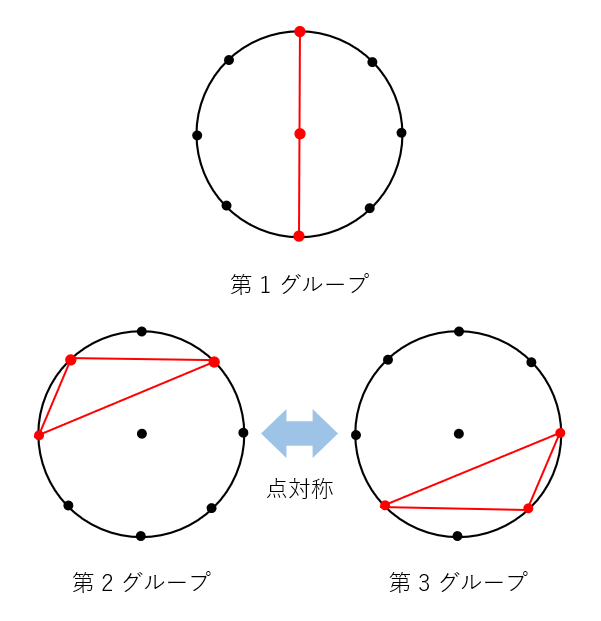
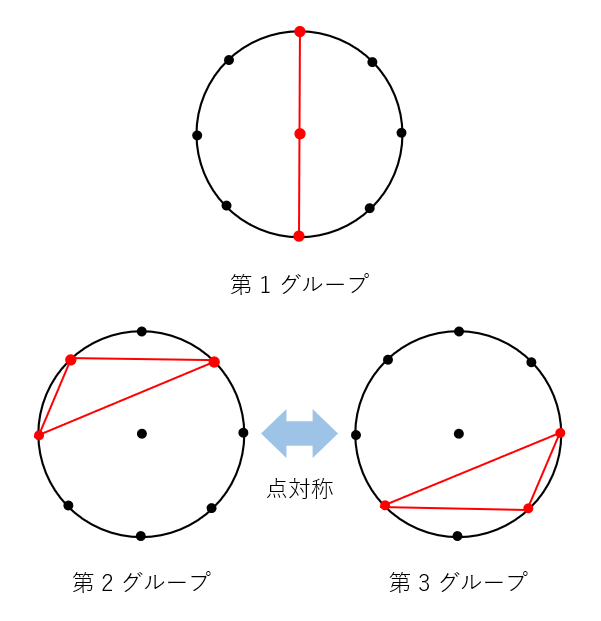

上記の条件のもとでなるべく対戦数が多くなるように、いくつかの方法を使って作成しました。
2 卓以下の場合、2 戦目の時点で複数回同卓しない条件を満たせないため、3 卓以上について考えました。
| 卓数 | 方法 | 備考 |
|---|---|---|
| 5, 9, 13 | 総当たり戦の作成方法 ① で作成 次項で説明します | 「4n+1」形のものの一部 |
| 3, 11, 17, 19, 25 | 総当たり戦の作成方法 ② で作成 次項で説明します | 奇数の一部 |
| 4 | 3人麻雀 3チーム戦 卓組作成方法で作成 | |
| 7, 15, 21, 23, 27, 29, 6 ～ 30 の偶数 | 4麻個人戦「4チーム戦にチーム内対戦を加える方法」に近い方法で作成 |
卓数が奇数の場合、以下の (前述のものより厳しい) 条件を満たす総当たり戦を組める可能性があります。
卓数が偶数の場合は、対戦数にかかわらず、3, 4 番目の条件を同時に満たすことはできません。(自分以外の選手の総数を 2 (= 1 対戦で同卓できる人数) で割ると 1 余るため。)
(4 人麻雀の) 総当たり戦 卓組作成方法と同様の、円と点を使う方法で、卓組を構成していきます。
まず、大小 1 つずつの同心円を描きます。各円周を 3n+1 等分するように、点を打ちます。円の中心にも点を打ちます。
合計 6n+3 個の点を打ちました。これらの点が選手を表します。
下図は、n = 2 (5 卓 15 人 7 戦) の場合の例です。各円周を 7 等分しています。
これらの点について、3 個ごとにグループ分けします。
各グループに属する点同士を、すべて線で結びます。
線で結ばれていることは同卓を表します。
下図は 5 卓 15 人 の場合に、5 グループに分ける例です。上段が全て重ねた図、下段が各グループを抜き出した図です。
全て重ねた図について、線だけを、時計回りに 1 / (3n+1) だけ回転させます。
この操作を 3n 回行い、操作前・1 回目の操作後・2 回目の操作後・...・3n 回目の操作後、の合計 (3n+1) パターンの線の配置を保存します。
1 回目の操作後の線の配置は 2 戦目の卓組を、2 回目の操作後の線の配置は 3 戦目の卓組を表します。
保存した線の配置 ((3n+1) パターン)
を全て重ねます。この際に、完全に重なる線が一つも無いことが、どの選手も同じ相手と複数回同卓しないことを表します。
(全ての点のペアの間に線があることが、どの選手も全員と 1 回ずつ同卓していることを表します。重なる線が無い場合、自動的にこちらも達成されます。)
下図は、少しゴチャゴチャしていますが、完全に重なる線は一つもありません。
ただし、これは最初のグループの分け方 (線の結び方) をうまく行なったからであり、グループをランダムに分けた場合は、たいてい重なります。
本手法では、この「最初のグループの分け方」を、プログラムにより探索しました。
n が奇数 (3, 7, 11, ... 卓) の場合、各円上の点の数 3n+1 は偶数になります。
その場合、円のちょうど反対側に位置する点を結ぶ線が (回転操作前～最後の操作後のどこかで) 必要です。
しかし、この線は半回転 (回転操作を (3n+1) / 2 回) した際に元の線と重なってしまいます。
下図は n = 1 (3 卓 9 人 4 戦) の例です。(赤線は厳密には重なりませんが、結ぶ 2 点が同じなので重なっていると見なせます。)
よって、n が奇数の場合は上記の方法 ① では卓組を構成できません。
なお、「全ての偶数の n で構成できること」や「構成できない偶数の n があること」は示せていませんが、n = 2, 4, 6 (5, 9, 13 卓)
では卓組を構成できることを確認しました。
円と点を使う部分は方法 ① と同様ですが、円を 1 つにしてグループ分けを工夫した方法です。
まず、円を (1 つ) 描き、円周上に等間隔に 6n+2 個の点を打ちます。円の中心にも点を打ちます。これらの点が選手を表します。
これらの点を、以下のように 3 個ごとにグループ分けします。
各グループに属する点同士を、すべて線で結びます。線で結ばれていることは同卓を表します。
下図は 3 卓 9 人 の場合に、3 グループに分ける例です。左が全て重ねた図、右が各グループを抜き出した図です。
 

全て重ねた図について、線だけを、時計回りに 1 / (6n+2) だけ回転させます。
この操作を 3n 回行い、操作前・1 回目の操作後・2 回目の操作後・...・3n 回目の操作後、の合計 (3n+1) パターンの線の配置を保存します。
1 回目の操作後の線の配置は 2 戦目の卓組を、2 回目の操作後の線の配置は 3 戦目の卓組を表します。
方法 ① では合計で 1 回転させていた (*) のに対し、こちらの方法では半回転で終了 (*)
となります。半回転させると、操作前と同じ線の配置になります。
(*) 厳密には、回転し切る直前で終了しています。
保存した線の配置 ((3n+1) パターン)
を全て重ねます。この際に、完全に重なる線が一つも無いことが、どの選手も同じ相手と複数回同卓しないことを表します。
(全ての点のペアの間に線があることが、どの選手も全員と 1 回ずつ同卓していることを表します。重なる線が無い場合、自動的にこちらも達成されます。)
下図は、完全に重なる線は一つもありません。
ただし、これは最初のグループの分け方 (線の結び方) をうまく行なったからであり、グループをランダムに分けた場合は、たいてい重なります。
本手法では、この「最初のグループの分け方」を、プログラムにより探索しました。
n を 4 で割った余りが 2 か 3、すなわち n = 2, 3, 6, 7, 10, 11, ... (5, 7, 13, 15, 21, 23, ... 卓) の場合は、上記の方法 ② では卓組を構成できないことが証明できます。
円周上で隣接する 2 個の点 (黒丸) で区切られる弧の長さを 1 としたとき、長さ a の弧を作る 2 個の点を結ぶ赤線を線 a と呼ぶことにします。
線 1, 2, ..., 3n の 3n 本を (端点が点上にくるように) 置いて、合計 n 個の三角形を作れることが、上記の方法で卓組を構成できる必要条件です。
(実際にはさらなる追加条件が必要です。線 1, 2, ..., 3n の 3n 本をもう 1 セット置いて、それらでも n
個の三角形を作り、さらに図形全体が点対称になっている必要があります。)
また、線 a, b, c で三角形を作れる条件は、a, b, c のうち 1 個以下にマイナス符号を付けて足し合わせたもののいずれか (a+b+c, -a+b+c, a-b+c, a+b-c
のいずれか) が 6n+2 (円上の点の数) の倍数になることです。
よって、以下の問題を解けることが必要です。
「整数 1, 2, ..., 3n のうち 0 個以上 n 個以下にマイナス符号を付けてよいとき、総和を 6n+2 の倍数にできるか？」...(A)
ここで、各整数にマイナス符号をいくつつけても、総和の偶奇は変わりません (a にマイナスをつけると総和は 2a (偶数) だけ減少するため)。
6n+2 は偶数なので、(A) が解けるためには総和 1 + 2 + ... + 3n = 3n(3n+1)/2 が偶数である必要があります。
n = 2k, 2k+1 (k は整数) と場合分けして計算すると、どちらの場合も k と総和の偶奇が一致することが示せます。
従って、k が奇数である場合、すなわち n を 4 で割った余りが 2 か 3 である場合は、総和が奇数となり、(A)
を解けず、必要条件を満たせないため、上記の方法 ② では卓組を構成できません。
なお、n を 4 で割った余りが 0 か 1 の場合「全てのそのような n で構成できること」や「構成できないそのような n があること」は示せていませんが、n = 12 (25 卓) までは卓組を構成できることを確認しました。